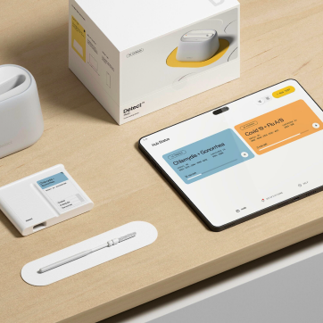
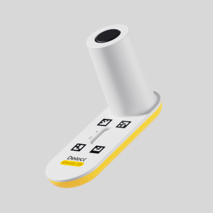
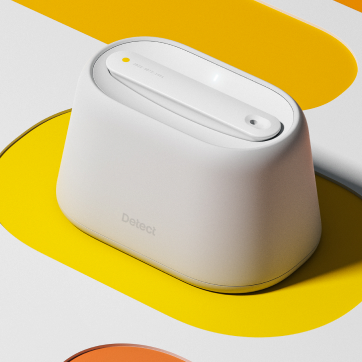
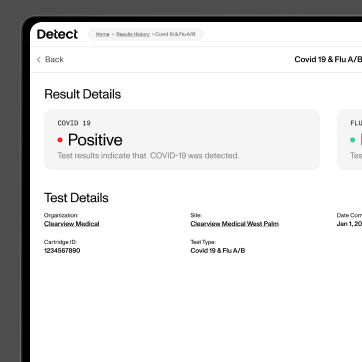
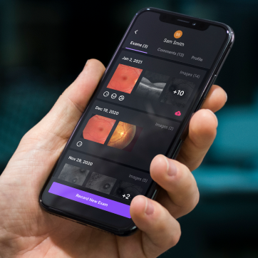
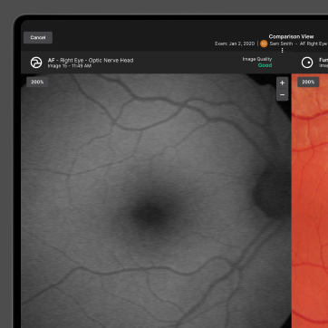
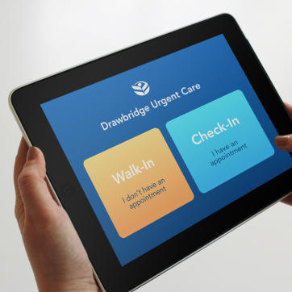
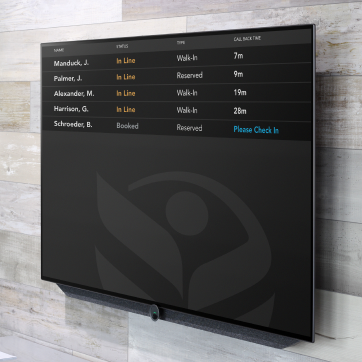
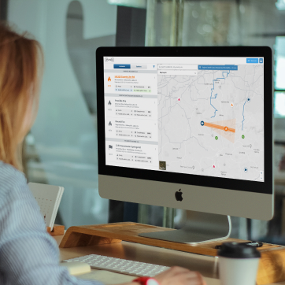

I design the software side of hardware.
My sweet spot: early-stage healthcare and med-tech companies — usually a founder or a small team with an idea that needs a working prototype to get buy-in.
I've been at this a while now, and have designed the early-stage platforms for some awesome companies — Detect, Pano, Identifeye, and Eko Health.
I'm also a partner at Misfit Labs, a Miami-based AI-native venture studio (whew, mouthful), with some close friends.
Away from the desk, you'll usually find me walking the dog pack, exploring somewhere new, listening to my wife's record collection, or doing weird things with a kettlebell.
Build exciting tech, then go get lost outside — that's the rhythm.
Have an idea? Send me a note and let's talk it through. hello@scottjohns.me








